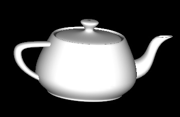
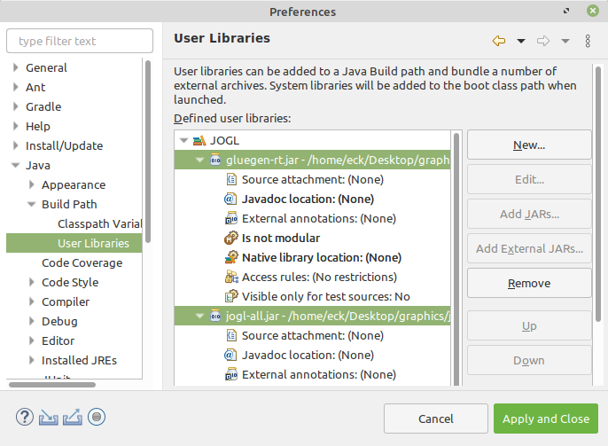

OpenGL is an API for graphics only, with no support for things like windows or events. OpenGL depends on external mechanisms to create the drawing surfaces on which it will draw. Windowing APIs that support OpenGL often do so as one library among many others that are used to produce a complete application. We will look at two cross-platform APIs that make it possible to use OpenGL in applications, one for C/C++ and one for Java.
For simple applications written in C or C++, one possible windowing API is GLUT (OpenGL Utility Toolkit). GLUT is a small API. It is used to create windows that serve as simple frames for OpenGL drawing surfaces. It has support for handling mouse and keyboard events, and it can do basic animation. It does not support controls such as buttons or input fields, but it does allow for a menu that pops up in response to a mouse action. The original version of GLUT is no longer actively supported, and a version called freeglut (http://freeglut.sourceforge.net/) is recommended instead. For example, the version included in Linux is actually freeglut. For details of the freeglut API, see
http://freeglut.sourceforge.net/docs/api.php
JOGL (Java OpenGL) is a collection of classes that make it possible to use OpenGL in Java applications. JOGL is integrated into Swing and AWT, the standard Java graphical user interface APIs. With JOGL, you can create Java GUI components on which you can draw using OpenGL. These OpenGL components can be used in any Java application, in much the same way that you would use a Canvas or JPanel as a drawing surface. Like many things Java, JOGL is immensely complicated. We will use it only in fairly simple applications. JOGL is not a standard part of Java. It's home web site is
This section contains information to get you started using GLUT and JOGL, assuming that you already know the basics of programming with C and Java. It also briefly discusses glsim.js, a JavaScript library that I have written to simulate the subset of OpenGL 1.1 that is used in this book.
To work with GLUT, you will need a C compiler and copies of the OpenGL and GLUT (or freeglut) development libraries. I can't tell you exactly that means on your own computer. On my computer, which runs Linux Mint, for example, the free C compiler gcc is already available. To do OpenGL development, I installed several packages, including freeglut3-dev and libgl1-mesa-dev. (Mesa is a Linux implementation of OpenGL.) If glutprog.c contains a complete C program that uses GLUT, I can compile it using a command such as
gcc -o glutprog glutprog.c -lGL -lglut
The "-o glutprog" tells the compiler to use "glutprog" as the name of its output file, which can then be run as a normal executable file; without this option, the executable file would be named "a.out". The "-lglut" and "-lGL" options tell the compiler to link the program with the GLUT and OpenGL libraries. (The character after the "-" is a lower case "L".) Without these options, the linker won't recognize any GLUT or OpenGL functions. If the program also uses the GLU library, compiling it would require the option "-lGLU, and if it uses the math library, it would need the option "-lm". If a program requires additional .c files, they should be included as well. For example, the sample program glut/color-cube-of-spheres.c depends on camera.c, and it can be compiled with the Linux gcc compiler using the command:
gcc -o cubes color-cube-of-spheres.c camera.c -lGL -lglut -lGLU -lm
The sample program glut/glut-starter.c can be used as a starting point for writing programs that use GLUT. While it doesn't do anything except open a window, the program contains the framework needed to do OpenGL drawing, including doing animation, responding to mouse and keyboard events, and setting up a menu. The source code contains comments that tell you how to use it.
On Windows, you might consider installing the WSL, or Windows Subsystem for Linux, (https://docs.microsoft.com/en-us/windows/wsl/), which as I write this should soon include the ability to work with GUI programs. WSL is an official Microsoft system lets you install a version of Linux inside Windows. Another option is the older open source project, Cygwin (https://cygwin.com/). (Using Cygwin, I installed the packages gcc-core, xinit, xorg-server, libglut-devel, libGLU-devel, and libGL-devel. After starting the X11 window system with the startxwin command, I was able to compile and run OpenGL examples from this textbook in a Cygwin terminal window using the same commands that I would use in Linux.)
For MacOS, the situation is more complicated, because OpenGL has been deprecated in favor of Metal, Apple's own proprietary API. However, as I write this, OpenGL can still be used on MacOS with Apple's XCode developer tools. The examples from this textbook require some modification to work with XCode tools, since the OpenGL and GLUT libraries are not loaded in the same way on Mac as they are on Linux. Modified programs for use on MacOS can be found in the source folder glut/glut-mac. See the README.txt file in that folder for more information.
The GLUT library makes it easy to write basic OpenGL applications in C. GLUT uses event-handling functions. You write functions to handle events that occur when the display needs to be redrawn or when the user clicks the mouse or presses a key on the keyboard.
To use GLUT, you need to include the header file glut.h (or freeglut.h) at the start of any source code file that uses it, along with the general OpenGL header file, gl.h. The header files should be installed in a standard location, in a folder named GL. (But note that the folder name could be different, or omitted entirely.) So, the program usually begins with something like
#include <GL/gl.h> #include <GL/glut.h>
On my computer, saying #include <GL/glut.h> actually includes the subset of FreeGLUT that corresponds to GLUT. To get access to all of FreeGLUT, I would substitute #include <GL/freeglut.h>. Depending on the features that it uses, a program might need other header files, such as #include <GL/glu.h> and #include <math.h>.
The program's main() function must contain some code to initialize GLUT, to create and open a window, and to set up event handling by registering the functions that should be called in response to various events. After this setup, it must call a function that runs the GLUT event-handling loop. That function waits for events and processes them by calling the functions that have been registered to handle them. The event loop runs until the program ends, which happens when the user closes the window or when the program calls the standard exit() function.
To set up the event-handling functions, GLUT uses the fact that in C, it is possible to pass a function name as a parameter to another function. For example, if display() is the function that should be called to draw the content of the window, then the program would use the command
glutDisplayFunc(display);
to install this function as an event handler for display events. A display event occurs when the contents of the window need to be redrawn, including when the window is first opened. Note that display must have been previously defined, as a function with no parameters:
void display() {
.
. // OpenGL drawing code goes here!
.
}
Keep in mind that it's not the name of this function that makes it an OpenGL display function. It has to be set as the display function by calling glutDisplayFunc(display). All of the GLUT event-handling functions work in a similar way (except many of them do need to have parameters).
There are a lot of possible event-handling functions, and I will only cover some of them here. Let's jump right in and look at a possible main() routine for a GLUT program that uses most of the common event handlers:
int main(int argc, char** argv) {
glutInit(&argc, argv); // Required initialization!
glutInitDisplayMode(GLUT_DOUBLE | GLUT_DEPTH);
glutInitWindowSize(500,500); // size of display area, in pixels
glutInitWindowPosition(100,100); // location in screen coordinates
glutCreateWindow("OpenGL Program"); // the parameter is the window title
glutDisplayFunc(display); // called when window needs to be redrawn
glutReshapeFunc(reshape); // called when size of the window changes
glutKeyboardFunc(keyFunc); // called when user types a character
glutSpecialFunc(specialKeyFunc);// called when user presses a special key
glutMouseFunc(mouseFunc); // called for mousedown and mouseup events
glutMotionFunc(mouseDragFunc); // called when mouse is dragged
glutIdleFunc(idleFun); // called when there are no other events
glutMainLoop(); // Run the event loop! This function never returns.
return 0; // (This line will never actually be reached.)
}
The first five lines do some necessary initialization, the next seven lines install event handlers, and the call to glutMainLoop() runs the GLUT event loop. I will discuss all of the functions that are used here. The first GLUT function call must be glutInit, with the parameters as shown. (Note that argc and argv represent command-line arguments for the program. Passing them to glutInit allows it to process certain command-line arguments that are recognized by GLUT. I won't discuss those arguments here.) The functions glutInitWindowSize and glutInitWindowPosition do the obvious things; size is given in pixels, and window position is given in terms of pixel coordinates on the computer screen, with (0,0) at the upper left corner of the screen. The function glutCreateWindow creates the window, but note that nothing can happen in that window until glutMainLoop is called. Often, an additional, user-defined function is called in main() to do whatever initialization of global variables and OpenGL state is required by the program. OpenGL initialization can be done after calling glutCreateWindow and before calling glutMainLoop. Turning to the other functions used in main(),
glutInitDisplayMode(GLUT_DOUBLE | GLUT_DEPTH) — Must be called to define some characteristics of the OpenGL drawing context. The parameter specifies features that you would like the OpenGL context to have. The features are represented by constants that are OR'ed together in the parameter. GLUT_DEPTH says that a depth buffer should be created; without it, the depth test won't work. If you are doing 2D graphics, you wouldn't include this option. GLUT_DOUBLE asks for double buffering, which means that drawing is actually done off-screen, and the off-screen copy has to copied to the screen to be seen. The copying is done by glutSwapBuffers(), which must be called at the end of the display function. (You can use GLUT_SINGLE instead of GLUT_DOUBLE to get single buffering; in that case, you have to call glFlush() at the end of the display function instead of glutSwapBuffers(). However, all of the examples in this book use GLUT_DOUBLE.)
glutDisplayFunc(display) — The display function should contain OpenGL drawing code that can completely redraw the scene. This is similar to paintComponent() in the Java Swing API. The display function can have any name, but it must be declared as a void function with no parameters: void display().
glutReshapeFunc(reshape) — The reshape function is called when the user changes the size of the window. Its parameters tell the new width and height of the drawing area:
void reshape( int width, int height )
For example, you might use this method to set up the projection transform, if the projection depends only on the window size. A reshape function is not required, but if one is provided, it should always set the OpenGL viewport, which is the part of the window that is used for drawing. Do this by calling
glViewport(0,0,width,height);
The viewport is set automatically if no reshape function is specified.
glutKeyboardFunc(keyFunc) — The keyboard function is called when the user types a character such as 'b' or 'A' or a space. It is not called for special keys such as arrow keys that do not produce characters when pressed. The keyboard function has a parameter of type unsigned char which represents the character that was typed. It also has two int parameters that give the location of the mouse when the key was pressed, in pixel coordinates with (0,0) at the upper left corner of the display area. So, the definition of the key function must have the form:
void keyFunc( unsigned char ch, int x, int y )
Whenever you make any changes to the program's data that require the display to be redrawn, you should call glutPostRedisplay(). This is similar to calling repaint() in Java. It is better to call glutPostRedisplay() than to call the display function directly. (I also note that it's possible to call OpenGL drawing commands directly in the event-handling functions, but it probably only makes sense if you are using single buffering; if you do this, call glFlush() to make sure that the drawing appears on the screen.)
glutSpecialFunc(specialKeyFunc) — The "special" function is called when the user presses certain special keys, such as an arrow key or the Home key. The parameters are an integer code for the key that was pressed, plus the mouse position when the key was pressed:
void specialKeyFunc( int key, int x, int y )
GLUT has constants to represent the possible key codes, including GLUT_KEY_LEFT, GLUT_KEY_RIGHT, GLUT_KEY_UP, and GLUT_KEY_DOWN for the arrow keys and GLUT_KEY_HOME for the Home key. For example, you can check whether the user pressed the left arrow key by testing if (key == GLUT_KEY_LEFT).
glutMouseFunc(mouseFunc) — The mouse function is called both when the user presses and when the user releases a button on the mouse, with a parameter to tell which of these occurred. The function will generally look like this:
void mouseFunc(int button, int buttonState, int x, int y) {
if (buttonState == GLUT_DOWN) {
// handle mousePressed event
}
else { // buttonState is GLUT_UP
// handle mouseReleased event
}
}
The first parameter tells which mouse button was pressed or released; its value is the constant GLUT_LEFT_BUTTON for the left, GLUT_MIDDLE_BUTTON for the middle, and GLUT_RIGHT_BUTTON for the right mouse button. The other two parameters tell the position of the mouse. The mouse position is given in pixel coordinates with (0,0) in the top left corner of the display area and with y increasing from top to bottom.
glutMotionFunc(mouseDragFunc) — The motion function is called when the user moves the mouse while dragging, that is, while a mouse button is pressed. After the user presses the mouse in the OpenGL window, this function will continue to be called even if the mouse moves outside the window, and the mouse release event will also be sent to the same window. The function has two parameters to specify the new mouse position:
void mouseDragFunc(int x, int y)
glutIdleFunc(idleFunction) — The idle function is called by the GLUT event loop whenever there are no events waiting to be processed. The idle function has no parameters. It is called as often as possible, not at periodic intervals. GLUT also has a timer function, which schedules some function to be called once, after a specified delay. To set a timer, call
glutTimerFunc(delayInMilliseconds, timerFunction, userSelectedID)
and define timerFunction as
void timerFunction(int timerID) { ...
The parameter to timerFunction when it is called will be the same integer that was passed as the third parameter to glutTimerFunc. If you want to use glutTimerFunc for animation, then timerFunction should end with another call to glutTimerFunc.
A GLUT window does not have a menu bar, but it is possible to add a hidden popup menu to the window. The menu will appear in response to a mouse click on the display. You can set whether it is triggered by the left, middle, or right mouse button.
A menu is created using the function glutCreateMenu(menuHandler), where the parameter is the name of a function that will be called when the user selects a command from the menu. The function must be defined with a parameter of type int that identifies the command that was selected:
void menuHandler( int commandID ) { ...
Once the menu has been created, commands are added to the menu by calling the function glutAddMenuEntry(name,commandID). The first parameter is the string that will appear in the menu. The second is an int that identifies the command; it is the integer that will be passed to the menu-handling function when the user selects the command from the menu.
Finally, the function glutAttachMenu(button) attaches the menu to the window. The parameter specifies which mouse button will trigger the menu. Possible values are GLUT_LEFT_BUTTON, GLUT_MIDDLE_BUTTON, and GLUT_RIGHT_BUTTON. As far as I can tell, if a mouse click is used to trigger the popup menu, than the same mouse click will not also produce a call to the mouse-handler function.
Note that a call to glutAddMenuEntry doesn't mention the menu, and a call to glutAttachMenu doesn't mention either the menu or the window. When you call glutCreateMenu, the menu that is created becomes the "current menu" in the GLUT state. When glutAddMenuEntry is called, it adds a command to the current menu. When glutAttachMenu is called, it attaches the current menu to the current window, which was set by a call to glutCreateWindow. All this is consistent with the OpenGL "state machine" philosophy, where functions act by modifying the current state.
As an example, suppose that we want to let the user set the background color for the display. We need a function to carry out commands that we will add to the menu. For example, we might define
function doMenu( int commandID ) {
if ( commandID == 1)
glClearColor(0,0,0,1); // BLACK
else if ( commandID == 2)
glClearColor(1,1,1,1); // WHITE
else if ( commandID == 3)
glClearColor(0,0,0.5,1); // DARK BLUE
else if (commandID == 10)
exit(0); // END THE PROGRAM
glutPostRedisplay(); // redraw the display, with the new background color
}
We might have another function to create the menu. This function would be called in main(), after calling glutCreateWindow:
function createMenu() {
glutCreateMenu( doMenu ); // Call doMenu() in response to menu commands.
glutAddMenuEntry( "Black Background", 1 );
glutAddMenuEntry( "White Background", 2 );
glutAddMenuEntry( "Blue Background", 3 );
glutAddMenuEntry( "EXIT", 10 );
glutAttachMenu(GLUT_RIGHT_BUTTON); // Show menu on right-click.
}
It's possible to have submenus in a menu. I won't discuss the procedure here, but you can look at the sample program glut/ifs-polyhedron-viewer.c for an example of using submenus.
In addition to window and event handling, GLUT includes some functions for drawing basic 3D shapes such as spheres, cones, and regular polyhedra. It has two functions for each shape, a "solid" version that draws the shape as a solid object, and a wireframe version that draws something that looks like it's made of wire mesh. (The wireframe is produced by drawing just the outlines of the polygons that make up the object.) For example, the function
void glutSolidSphere(double radius, int slices, int stacks)
draws a solid sphere with the given radius, centered at the origin. Remember that this is just an approximation of a sphere, made up of polygons. For the approximation, the sphere is divided by lines of longitude, like the slices of an orange, and by lines of latitude, like a stack of disks. The parameters slices and stacks tell how many subdivisions to use. Typical values are 32 and 16, but the number that you need to get a good approximation for a sphere depends on the size of the sphere on the screen. The function glutWireframeSphere has the same parameters but draws only the lines of latitude and longitude. Functions for a cone, a cylinder, and a torus (doughnut) are similar:
void glutSolidCone(double base, double height,
int slices, int stacks)
void glutSolidTorus(double innerRadius, double outerRadius,
int slices, int rings)
void glutSolidCylinder(double radius, double height,
int slices, int stacks)
// NOTE: Cylinders are available in FreeGLUT and in Java,
// but not in the original GLUT library.
For a torus, the innerRadius is the size of the doughnut hole. The function
void glutSolidCube(double size)
draws a cube of a specified size. There are functions for the other regular polyhedra that have no parameters and draw the object at some fixed size: glutSolidTetrahedron(), glutSolidOctahedron(), glutSolidDodecahedron(), and glutSolidIcosahedron(). There is also glutSolidTeapot(size) that draws a famous object that is often used as an example. Here's what the teapot looks like:

Wireframe versions of all of the shapes are also available. For example, glutWireTeapot(size) draws a wireframe teapot. Note that GLUT shapes come with normal vectors that are required for lighting calculations. However, except for the teapot, they do not come with texture coordinates, which are required for applying textures to objects.
GLUT also includes some limited support for drawing text in an OpenGL drawing context. I won't discuss that possibility here. You can check the API documentation if you are interested, and you can find an example in the sample program glut/color-cube-of-spheres.c.
JOGL is a framework for using OpenGL in Java programs. It is a large and complex API that supports all versions of OpenGL, but it is fairly easy to use for basic applications. You should use JOGL 2.4 or later. The programs in this book were tested with version 2.4.0.
The sample program jogl/JoglStarter.java can be used as a starting point for writing OpenGL programs using JOGL. While it doesn't do anything except open a window, the program contains the framework needed to do OpenGL drawing, including doing animation, responding to mouse and keyboard events, and setting up a menu. The source code contains comments that tell you how to use it.
To use JOGL, you will need two .jar files containing the Java classes for JOGL: jogl-all.jar and gluegen-rt.jar. In addition, you will need two native library files. A native library is a collection of routines that can be called from Java but are not written in Java. Routines in a native library will work on only one kind of computer; you need a different native library for each type of computer on which your program is to be used. The native libraries for JOGL are stored in additional .jar files, which are available in several versions for different computers. For example, for 64-bit Linux on Intel or AMD CPUs, you need jogl-all-natives-linux-amd64.jar and gluegen-rt-natives-linux-amd64.jar. It is unfortunate that there are different versions for different platforms, since many people don't know exactly which one they are using. However, if you are in doubt, you can get more than one version; JOGL will figure out which one to use.
JOGL software can be found at https://jogamp.org/. You can download the jar files from the most recent release, which can be found near the end of the list at
https://jogamp.org/deployment/archive/rc/
Click on the release name, then click on the jar/ link to see the full list of jar files. Find and download jogl-all.jar and gluegen-rt.jar and the corresponding native library files. I have also made jogl-all.jar and gluegen-rt.jar available on my own web site, along with the native libraries for some of the most common platforms, at
http://math.hws.edu/eck/cs424/jogl_2_4_support/
JOGL is open-source, and the files are freely redistributable, according to their license.
To do JOGL development, you should create a directory somewhere on your computer to hold the jar files. Place the two JOGL jar files in that directory, along with the two native library jar files for your platform. (Having extra native library jar files doesn't hurt, as long as you have the ones that you need.)
It is possible to do JOGL development on the command line. You have to tell the javac command where to find the two JOGL jar files. You do that in the classpath ("-cp") option to the javac command. For example, if you are working in Linux or MacOS, and if the jar files happen to be in the same directory where you are working, you might say:
javac -cp jogl-all.jar:gluegen-rt.jar:. MyOpenGLProg.java
It's similar for Windows, except that the classpath uses a ";" instead of a ":" to separate the items in the list:
javac -cp jogl-all.jar;gluegen-rt.jar;. MyOpenGLProg.java
There is an essential period at the end of the classpath, which makes it possible for Java to find .java files in the current directory. If the jar files are not in the current directory, you can use full path names or relative path names to the files. For example,
javac -cp ../jogl/jogl-all.jar:../jogl/gluegen-rt.jar:. MyOpenGLProg.java
Running a program with the java command is exactly similar. For example:
java -cp jogl-all.jar:gluegen-rt.jar:. MyOpenGLProg
Note that you don't have to explicitly reference the native library jar files. They just have to be in the same directory with the JOGL jar files.
I do most of my Java development using the Eclipse IDE (http://eclipse.org). To do development with JOGL in Eclipse, you will have to configure Eclipse with information about the jar files. To do that, start up Eclipse. You want to create a "User Library" to contain the jar files: Open the Eclipse Preferences window, and select "Java" / "Build Path" / "User Libraries" on the left. Click the "New" button on the right. Enter "JOGL" (or any name you like) as the name of the user library. Make sure that the new user library is selected in the list of libraries, then click the "Add External Jars" button. In the file selection box, navigate to the directory that contains the JOGL jar files, and select the two jar files that are needed for JOGL, jogl-all.jar and gluegen-rt.jar. (Again, you do not need to add the native libraries; they just need to be in the same directory as the JOGL jar files.) Click "Open". The selected jars will be added to the user library. (You could also add them one at a time, if you don't know how to select multiple files.) It should look something like this:

Click "OK." The user library has been created. You will only have to do this once, and then you can use it in all of your JOGL projects.
Now, to use OpenGL in a project, create a new Java project as usual in Eclipse. (If you are asked whether you want to create a module-info.java file for the project, say "Don't Create". Sample programs for this textbook do not use Java modules.) Right-click the new project in the Project Explorer view, and select "Build Path" / "Configure Build Path" from the menu. You will see the project Properties dialog, with "Java Build Path" selected on the left. (You can also access this through the "Properties" command in the "Project" menu.) Select the "Libraries" tab at the top of the window, and then click on "Class Path" in the "Libraries" tab to select it. Click the "Add Library" button, on the right. In the popup window, select "User Library" and click "Next." In the next window, select your JOGL User Library and click "Finish." Finally, click "Apply and Close" in the main Properties window. Your project should now be set up to do JOGL development. You should see the JOGL User Library listed as part of the project in the Project Explorer. Any time you want to start a new JOGL project, you can go through the same setup to add the JOGL User Library to the build path in the project.
With all that setup out of the way, it's time to talk about actually writing OpenGL programs with Java. With JOGL, we don't have to talk about mouse and keyboard handling or animation, since that can be done in the same way as in any Java Swing program. You will only need to know about a few classes from the JOGL API.
First, you need a GUI component on which you can draw using OpenGL. For that, you can use GLJPanel, which is a subclass of JPanel. (GLJPanel is for use in programs based on the Swing API; an alternative is GLCanvas, which is a subclass of the older AWT class Canvas.) The class is defined in the package com.jogamp.opengl.awt. All of the other classes that we will need for basic OpenGL programming are in the package com.jogamp.opengl.
JOGL uses Java's event framework to manage OpenGL drawing contexts, and it defines a custom event listener interface, GLEventListener, to manage OpenGL events. To draw on a GLJPanel with OpenGL, you need to create an object that implements the GLEventListener interface, and register that listener with your GLJPanel. The GLEventListener interface defines the following methods:
public void init(GLAutoDrawable drawable)
public void display(GLAutoDrawable drawable)
public void dispose(GLAutoDrawable drawable)
public void reshape(GLAutoDrawable drawable,
int x, int y, int width, int height)
The drawable parameter in these methods tells which OpenGL drawing surface is involved. It will be a reference to the GLJPanel. (GLAutoDrawable is an interface that is implemented by GLJPanel and other OpenGL drawing surfaces.) The init() method is a place to do OpenGL initialization. (According to the documentation, it can actually be called several times, if the OpenGL context needs to be recreated for some reason. So init() should not be used to do initialization that shouldn't be done more than once.) The dispose() method will be called to give you a chance to do any cleanup before the OpenGL drawing context is destroyed. The reshape() method is called when the window first opens and whenever the size of the GLJPanel changes. OpenGL's glViewport() function is called automatically before reshape() is called, so you won't need to do it yourself. Usually, you won't need to write any code in dispose() or reshape(), but they have to be there to satisfy the definition of the GLEventListener interface.
The display() method is where the actual drawing is done and where you will do most of your work. It should ordinarily clear the drawing area and completely redraw the scene. Take a minute to study an outline for a minimal JOGL program. It creates a GLJPanel which also serves as the GLEventListener:
import com.jogamp.opengl.*;
import com.jogamp.opengl.awt.GLJPanel;
import java.awt.Dimension;
import javax.swing.JFrame;
public class JOGLProgram extends GLJPanel implements GLEventListener {
public static void main(String[] args) {
JFrame window = new JFrame("JOGL Program");
JOGLProgram panel = new JOGLProgram();
window.setContentPane(panel);
window.pack();
window.setLocation(50,50);
window.setDefaultCloseOperation(JFrame.EXIT_ON_CLOSE);
window.setVisible(true);
}
public JOGLProgram() {
setPreferredSize( new Dimension(500,500) );
addGLEventListener(this);
}
// --------------- Methods of the GLEventListener interface -----------
public void init(GLAutoDrawable drawable) {
// called when the panel is created
GL2 gl = drawable.getGL().getGL2();
// Add initialization code here!
}
public void display(GLAutoDrawable drawable) {
// called when the panel needs to be drawn
GL2 gl = drawable.getGL().getGL2();
// Add drawing code here!
}
public void reshape(GLAutoDrawable drawable,
int x, int y, int width, int height) {
// called when user resizes the window
}
public void dispose(GLAutoDrawable drawable) {
// called when the panel is being disposed
}
}
At this point, the only other thing you need to know is how to use OpenGL functions in the program. In JOGL, the OpenGL 1.1 functions are collected into an object of type GL2. (There are different classes for different versions of OpenGL; GL2 contains OpenGL 1.1 functionality, along with later versions that are compatible with 1.1.) An object of type GL2 is an OpenGL graphics context, in the same way that an object of type Graphics2D is a graphics context for ordinary Java 2D drawing. The statement
GL2 gl = drawable.getGL().getGL2();
in the above program obtains the drawing context for the GLAutoDrawable, that is, for the GLJPanel in that program. The name of the variable could, of course, be anything, but gl or gl2 is conventional.
For the most part, using OpenGL functions in JOGL is the same as in C, except that the functions are now methods in the object gl. For example, a call to glClearColor(r,g,b,a) becomes
gl.glClearColor(r,g,b,a);
The redundant "gl.gl" is a little annoying, but you get used to it. OpenGL constants such as GL_TRIANGLES are static members of GL2, so that, for example, GL_TRIANGLES becomes GL2.GL_TRIANGLES in JOGL. Parameter lists for OpenGL functions are the same as in the C API in most cases. One exception is for functions such as glVertex3fv() that take an array/pointer parameter in C. In JOGL, the parameter becomes an ordinary Java array, and an extra integer parameter is added to give the position of the data in the array. Here, for example, is how one might draw a triangle in JOGL, with all the vertex coordinates in one array:
float[] coords = { 0,0.5F, -0.5F,-0.5F, 0.5F,-0.5F };
gl.glBegin(GL2.GL_TRIANGLES);
gl.glVertex2fv(coords, 0); // first vertex data starts at index 0
gl.glVertex2fv(coords, 2); // second vertex data starts at index 2
gl.glVertex2fv(coords, 4); // third vertex data starts at index 4
gl.glEnd();
The biggest change in the JOGL API is the use of nio buffers instead of arrays in functions such as glVertexPointer. This is discussed in Subsection 3.4.3. We will see in Subsection 4.3.9 that texture images also get special treatment in JOGL.
The JOGL API includes a class named GLUT that makes GLUT's shape-drawing functions available in Java. (Since you don't need GLUT's window or event functions in Java, only the shape functions are included.) Class GLUT is defined in the package com.jogamp.opengl.util.gl2. To draw shapes using this class, you need to create an object of type GLUT. It's only necessary to make one of these for use in a program:
GLUT glut = new GLUT();
The methods in this object include all the shape-drawing functions from the GLUT C API, with the same names and parameters. For example:
glut.glutSolidSphere( 2, 32, 16 ); glut.glutWireTeapot( 5 ); glut.glutSolidIcosahedron();
(I don't know why these are instance methods in an object rather than static methods in a class; logically, there is no need for the object.)
The GLU library is available through the class com.jogamp.opengl.glu.GLU, and it works similarly to GLUT. That is, you have to create an object of type GLU, and the GLU functions will be available as methods in that object. We have encountered GLU only for the functions gluLookAt and gluPerspective, which are discussed in Section 3.3. For example,
GLU glu = new GLU(); glu.gluLookAt( 5,15,7, 0,0,0, 0,1,0 );
The JavaScript library glsim.js was written to accompany and support this textbook. It implements the subset of OpenGL 1.1 that is discussed in Chapter 3 and Chapter 4, except for display lists (Subsection 3.4.4). It is used in the demos that appear in those chapters. Many of the sample programs that are discussed in those chapters are available in JavaScript versions that use glsim.js.
If you would like to experiment with OpenGL 1.1, but don't want to go through the trouble of setting up a C or Java environment that supports OpenGL programming, you can consider writing your programs as web pages using glsim.js. Note that glsim is meant for experimentation and practice only, not for serious applications.
The OpenGL API that is implemented by glsim.js is essentially the same as the C API, although some of the details of semantics are different. Of course the techniques for creating a drawing surface and an OpenGL drawing context are specific to JavaScript and differ from those used in GLUT or JOGL.
To use glsim.js, you need to create an HTML document with a <canvas> element to serve as the drawing surface. The HTML file has to import the script; if glsim.js is in the same directory as the HTML file, you can do that with
<script src="glsim.js"></script>
To create the OpenGL drawing context, use the JavaScript command
glsimUse(canvas);
where canvas is either a string giving the id of the <canvas> element or is the JavaScript DOM object corresponding to the <canvas> element. Once you have created the drawing context in this way, any OpenGL commands that you give will apply to the canvas. To run the program, you just need to open the HTML document in a web browser that supports WebGL 1.0.
The easiest way to get started programming is to modify a program that already exists. The sample program glsim/first-triangle.html, from Subsection 3.1.2 is a very minimal example of using glsim.js. The sample web page glsim/glsim-starter.html can be used as a starting point for writing longer programs that use glsim.js. It provides a framework for doing OpenGL drawing, with support for animation and mouse and keyboard events. The code contains comments that tell you how to use it. Some documentation for the glsim.js library can be found in glsim/glsim-doc.html.